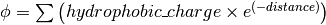

Main file class¶
- class Structure.Structure_Template(object)¶
This is a template class from which PDBFile and PQRFile will be derived, because they share a lot of functions.
This class is not supposed to work with multiple models (for example NMR structures)!
List of class one has to implement for each derivative:
- read structure
- write structure
- get_all_atom_coords()¶
Returns: a List of atom coordinates Example:
>>> a = Structure.PDBFile("/path/4N6W.pdb") >>> for ATOM in a.get_all_atom_coords(): ... print ATOM [-42.316 38.638 20.425] [-41.82 39.723 19.581] [-41.93 41.072 20.291] [-40.962 41.836 20.357] [-42.577 39.762 18.255] [-42.085 40.845 17.3 ] [-40.299 40.776 17.008] [-40.081 42.082 15.79 ] [-43.122 41.359 20.805] [-43.34 42.492 21.695] [...]
- get_coords_from_atom_list(atom_list)¶
Parameters: atom_list – list of atom objects Returns: a list of atom coordinates for the specified atom objects Example:
>>> a = Structure.PDBFile("/path/4N6W.pdb") >>> b = a.get_hetero_atoms()[1:3] # retrieving two atom objects >>> print b [<Atom FE>, <Atom CAC>] >>> print a.get_coords_from_atom_list(b) # getting coordinates [array([-28.139, 20.588, 11.849]), array([-30.158, 21.541, 5.145])] >>> print a.get_hetero_atoms_coords()[1:3] # just checking [array([-28.139, 20.588, 11.849]), array([-30.158, 21.541, 5.145])]
- get_hetero_atoms()¶
Navigate through all HETATM entries of the PDB file and return atom objects.
returns: a list of all hetero atoms (atom) Example:
>>> a = Structure.PDBFile("/path/4N6W.pdb") >>> for HETATM in a.get_hetero_atoms(): ... print HETATM <Atom FE> <Atom FE> <Atom CAC> <Atom CA> <Atom CB> <Atom CBC> <Atom CG> <Atom CGC> <Atom OA1> <Atom OA2> [...]
- get_hetero_atoms_coords()¶
Returns: a list of all hetero atom coordinates Example:
>>> a = Structure.PDBFile("/path/4N6W.pdb") >>> for HETATM in a.get_hetero_atoms_coords(): ... print HETATM [-28.886 22.883 9.035] [-28.139 20.588 11.849] [-30.158 21.541 5.145] [-30.083 20.273 5.97 ] [-29.335 20.464 7.282] [-27.967 21.06 7.026] [-29.217 19.094 7.918] [-28.359 19.09 9.162] [-29.115 22.097 4.693] [-31.292 22.037 4.902] [...]
- get_amino_atoms()¶
Returns: a list of all amino acid atoms (atom) Example:
>>> a = Structure.PDBFile("/path/4N6W.pdb") >>> for ATOM in a.get_amino_atoms(): ... print ATOM <Atom N> <Atom CA> <Atom C> <Atom O> <Atom CB> <Atom CG> <Atom SD> <Atom CE> <Atom N> <Atom CA> [...]
- get_amino_atoms_coords()¶
Returns: a list of all amino acid atom coordinates. Example:
>>> a = Structure.PDBFile("/path/4N6W.pdb") >>> for ATOM in a.get_amino_atoms_coords(): ... print ATOM ... [-42.316 38.638 20.425] [-41.82 39.723 19.581] [-41.93 41.072 20.291] [-40.962 41.836 20.357] [-42.577 39.762 18.255] [-42.085 40.845 17.3 ] [-40.299 40.776 17.008] [-40.081 42.082 15.79 ] [-43.122 41.359 20.805] [-43.34 42.492 21.695] [...]
- get_all_atoms()¶
Returns: a list of all atom coordinates Example:
>>> a = Structure.PDBFile("/path/4N6W.pdb") >>> for ATOM in a.get_amino_atoms_coords(): ... print ATOM <Atom N> <Atom CA> <Atom C> <Atom O> <Atom CB> <Atom CG> <Atom SD> <Atom CE> <Atom N> <Atom CA> [...]
- get_info_1(atoms=None)¶
Returns: a list of all atom information 1 values. For a pdb this is the occupancy and for a pqr it is the charge
- get_info_2(atoms=None)¶
Returns: a list of all atom information 2 values. For a pdb this is the temperature factor and for a pqr it is the radius
- get_chain_ids()¶
Returns: a list of all chain ids in this structure Example:
>>> a = Structure.PDBFile("/path/4N6W.pdb") >>> a.get_chain_ids() ['A']
- get_first_res_id()¶
Returns: the integer number of the first amino acid Example:
>>> a = Structure.PDBFile("/path/4N6W.pdb") >>> a.get_first_res_id() 1
- get_atoms_of_type(atom_type)¶
Parameters: atom_type (str) – type of atom to return (e.g. ‘CA’) Returns: a list of all atom objects of a certain type Example:
>>> a = Structure.PDBFile("/path/4N6W.pdb") >>> a.get_atoms_of_type("FE") [<Atom FE>, <Atom FE>]
- transform(T)¶
Transform the pdb structure with the given matrix.
Parameters: T – [3,3] numpy matrix to transform the coordinates by matrix multiplication Returns: None
- translate(transVector)¶
Method to translate protein structure by the given vector.
Parameters: transvector – Numpy array holding translation distances for each dimension Returns: None
- translate_x(dist)¶
Translate protein structure in the x direction.
Parameters: dist (float) – amount of displacement in the x direction (Angstrom) Returns: None Example:
>>> a = Structure.PDBFile("/path/4N6W.pdb") >>> print a.get_all_atom_coords()[0] # before translation [-42.316 38.638 20.425] >>> a.translate_x(2.0) >>> print a.get_all_atom_coords()[0] # after translation [-40.316 38.638 20.425]
- translate_y(dist)¶
Translate protein structure in the y direction.
Parameters: dist (float) – amount of displacement in the y direction (Angstrom) Returns: None
- translate_z(dist)¶
Translate protein structure in the z direction.
Parameters: dist (float) – amount of displacement in the z direction (Angstrom) Returns: None
- translate_origin_and_rotate(phi, theta, psi)¶
Center the structure at the origin, rotate it with angle_x around the x axis (angle_y around y axis, etc.) and move it back to where it was. ??? confusion angle_x with phi ???
Parameters: - phi (float) – euler angle for rotation
- theta (float) – euler angle for rotation
- psi (float) – euler angle for rotation
Returns: None
- move_to_new_position(new_coord)¶
Move the geometric center of the structure to the supplied coordinates.
Parameters: new_coord – list/numpy array of the new coordinates Returns: None
- rotate_and_move_to_new_position(phi, theta, psi, new_coord)¶
Center the structure at the origin, rotate it and move it to the new position new_coord.
Parameters: - phi (float) – euler angle for rotation
- theta (float) – euler angle for rotation
- psi (float) – euler angle for rotation
- new_coord – new coordination for the center of geometry
Returns: None
- rotate(angle, axis)¶
Rotate protein structure using the Rodrigues’ rotation formula.
Parameters: - degree (float) – angle by which to rotate (in degrees)
- axis (array) – axis around which to rotate (x = [1,0,0], y = [0,1,0], z = [0,0,1])
Returns: None
Example:
>>> a = Structure.PDBFile("/path/4N6W.pdb") >>> print a.get_all_atom_coords()[0] # before rotation [-42.316, 38.638, 20.425] >>> a.rotate(+30.0, [1,0,0]) # x axis >>> print a.get_all_atom_coords()[0] # after rotation [-42.316 23.24898955 37.00756887]
- rotateX(degree)¶
Parameters: degree (float) – angle for rotation around the x axis (in degrees) Returns: None Example:
>>> a = Structure.PDBFile("/path/4N6W.pdb") >>> print a.get_all_atom_coords()[0] # before rotation [-42.316, 38.638, 20.425] >>> a.rotateX(+30.0) >>> print a.get_all_atom_coords()[0] # after rotation [-42.316 23.24898955 37.00756887]
- rotateY(degree)¶
Parameters: degree (float) – angle for rotation around the y axis (in degrees) Returns: None
- rotateZ(degree)¶
Parameters: degree (float) – angle for rotation around the z axis (in degrees) Returns: None
- pRotate(phi, theta, psi)¶
Apply euler angle rotation to the structure.
Parameters: - phi (float) – euler angle for rotation
- theta (float) – euler angle for rotation
- psi (float) – euler angle for rotation
Returns: None
- rotate_by_matrix(rot_matrix)¶
Parameters: rot_matrix – [3,3] numpy matrix to transform the coordinates by matrix multiplication Returns: None
- determineCenterOfMass()¶
Method to determine the center of mass for the protein structure.
Returns: None Warning
Chris: This method is empty.
- determine_geometric_center()¶
Returns: a vector pointing to the geometric center of the structure Example:
>>> a = Structure.PDBFile("/path/4N6W.pdb") >>> print a.determine_geometric_center() [-27.25387547 25.13667925 13.83051887]
- determine_center_of_extremes_of_atoms(atoms)¶
Parameters: atoms – list of atom objects Returns: a vector pointing to the geometric center of the coordination extremes of the given atom coordinates
- determine_center_of_extremes()¶
Returns: a vector pointing to the geometric center of the coordination extremes of this structure Example:
>>> a = Structure.PDBFile("/path/4N6W.pdb") >>> print a.determine_center_of_extremes() [-26.8235 24.865 13.304]
- determine_max_diameter(atoms = None)¶
Parameters: atoms (Structure.atom object) – a list of atoms (optional), or all atoms of the structure if None Returns: a float number of the maximum diameter (Angstrom) Example:
>>> a = Structure.PDBFile("/path/4N6W.pdb") >>> print a.determine_max_diameter() 52.4878883362
- determine_radius(atoms = None)¶
Determine the geometric center and calculate the minimal radius that encapsulates all atoms.
Parameters: atoms (Structure.atom object) – a list of atoms (optional), or all atoms of the structure if None Returns: the radius (Angstrom) Return type: float Warning
JN: In the source code, center = self.determine_goometric_center_of_atoms(atoms) should be replaced with center = self.determine_geometric_center() but then, ValueError is raised
- center()¶
Translate the geometric center to the origin.
Returns: None Strictly equivalent to:
>>> a.translate(-a.determine_geometric_center())
- determine_coordinate_extremes(atoms = None)¶
Parameters: atoms – a list of atom objects, otherwise it uses all atoms of this structure and calculates the extreme coordinates in each direction (optional) Returns: extreme values in each direction as a 3*2 array
- get_radius_of_gyration()¶
This method calculates the radius of gyration. It is the maximum distance of an atom to the geometrical center.
Returns: radius of gyration Return type: float Example:
>>> a = Structure.PDBFile("/path/4N6W.pdb") >>> a.get_radius_of_gyration() 28.848387249760471
- clone(chain_id_list = None, res_id_list = None, res_type_list = None, atom_types_list = None)¶
Return a clone of self. Through the list parameters specific items can be selected, namely the list of residues or certain types of residues (mutually exclusive). One-letter codes for the residues will be translated to three-letter codes.
Parameters: - chain_id_list – list of chains to copy to the clone
- res_id_list – list of residues in each chain to copy to the clone
- res_type_list – types of residues to copy to the new clone
- atom_types_list – types of atoms to copy to the new clone
Returns: Raises AttributeError: if both res_id_list and res_type_list were used, or if self.what_am_i is empty.
Example:
>>> a = Structure.PDBFile("/path/4N6W.pdb") >>> b = a.clone() >>> print b <epitopsy.Structure.PDBFile object at 0x2088a90>
- get_residue_id_list(chain_id = None)¶
Display all residue numbers as found in the PDB file.
Parameters: chain_id (str) – which chain in the PDB file should be used (optional), if None, it uses all the available chains Returns: a list with all residue ID’s of the structure Example:
>>> a = Structure.PDBFile("/path/4N6W.pdb") >>> print a.get_residue_id_list() [1, 2, 3, 4, 5, 6, 7, 8, 9, 10, [...], 444]
- get_res_id_aa_dict(chain_id)¶
Display all residues from chain chain_id in a dictionary with residue number as key and amino acid one-letter code as value. The advantage of a dictionary over a list is that gaps in the sequence numbering are preserved. All non-amino acids are ignored.
Parameters: chain_id (str) – which chain in the PDB file should be used Returns: a dictionary with residues number and one-letter code Example:
>>> a = Structure.PDBFile("/path/4N6W.pdb") >>> a.get_res_id_aa_dict('A') Encountered the following non amino acids: ['FE', 'FLC', 'HOH'] {1: 'M', 2: 'S', 3: 'L', 4: 'S', 5: 'N', 6: 'S', 7: 'S', 8: 'K', 9: 'V', 10: 'S', [...], 187: 'E'}
Note
JN: In the source code, it would be nice to replace .format(non_amino_acid_list) at line 741 by .format(sorted(set(non_amino_acid_list))). The complete list brings nothing.
- contains_chain_break(chain_id = None)¶
Tell if a chain break exist in chain_id, or in the whole structure if omitted. HETATM are skipped.
Parameters: chain_id – the chain id where to look for a break (optional), uses all available chains if None Returns: either True (chain break) or False (no chain break). Return type: bool Note
JN: In the source code, return True could be replaced with return "Break between {0} and {1}".format(res_id_list[-1],res_id) (a string always evaluate to True) to indicate the user where the break is. This string could be displayed in the terminal or stored in a log file.
- get_res_id_array_mapping()¶
Remove gaps in the residue sequence and return the new mapping in a dictionary, with the old residue id’s as key and the new id’s as value. The new mapping starts at zero and is suitable for use as an index for an array.
Returns: a dictionary with old residue id’s as key and newly mapped id’s as value Example:
>>> a = Structure.PDBFile("/path/4N6W.pdb") >>> a.get_res_id_array_mapping() {1: 0, 2: 1, 3: 2, 4: 3, 5: 4, 6: 5, 7: 6, 8: 7, 9: 8, 10: 9, ..., 444: 326}
- get_residue_names_from_res_id_list(res_id_list, chain_id = None)¶
Display the three-letter code of the residues given in res_id_list from chain chain_id (if None, take the first chain).
Parameters: - res_id_list (list) – residue id’s from which one wants the names
- chain_id (str) – if None, it uses the all available chains (optional)
Returns: a list with the three-letter codes of the residues matching the given criteria
Example:
>>> a = Structure.PDBFile("/path/4N6W.pdb") >>> a.get_residue_names_from_res_id_list([1,2]) # residue id starts at 1 in the PDB file ['MET', 'SER']
- get_residues(chain_id = None, res_id_list = None)¶
Display all residues from res_id_list contained in chain chain_id as :class:Structure.Residue. If res_id_list is None, display all residues from chain chain_id. If chain_id is None, return an error excepted when there is only one chain in the PDB file.
This method returns a list with residue objects of the residue ids in the given list, if None is given, it returns all residues.
Parameters: - chain_id (str) – if None, it uses the all available chains (optional)
- res_id_list (list) – residue id’s from which one wants the objects
Returns: a list of residues matching the given criteria
Return type: Structure.Residue object
Example:
>>> a = Structure.PDBFile("/path/4N6W.pdb") >>> a.get_residues('A')[0:2] # residue id starts at 0 in a list [<Residue MET het= resseq=1 icode= >, <Residue SER het= resseq=2 icode= >]
Warning
JN: this method has a bug, please consider replacing res_list.append(res.resname) by res_list.append(res) to get the objects instead of just the names!
- get_atoms_by_id(atom_id_list)¶
This function returns atoms by their corresponding number from the pdb-file.
Parameters: atom_id_list (list) – atom id numbers Returns: a list of atoms matching the given criteria Return type: Structure.atom object Example:
>>> a = Structure.PDBFile("/path/4N6W.pdb") >>> a.get_atoms_by_id([1,2,3]) [<Atom N>, <Atom CA>, <Atom C>]
- get_atoms_close_to_reference(reference_point, max_radius, min_radius = 0, atoms = None)¶
Find all atoms lying in the range [min_radius, max_radius] to reference_point.
Parameters: - reference_point (numpy.array) – coordinates of the reference point
- max_radius (float) – maximal distance from the reference (Angstroem)
- min_radius (float) – minimal distance from the reference (Angstroem)
- atoms (Structure.atom) – list of the atoms to which the results should be restricted (optional), if None it uses all atoms from the protein
Returns: a list of atoms close to the given reference point
Return type: Structure.atom object
Example:
>>> a = Structure.PDBFile("/path/4N6W.pdb") >>> # retrieve the iron catalytic center >>> fe_list = a.get_atoms_of_type("FE") # fe_list = [<Atom FE>, <Atom FE>] >>> coord = a.get_coords_from_atom_list([fe_list[1]]) # coord = numpy.array([-28.139,20.588,11.849]) >>> # get all 6 atoms chelating Fe, excepted Fe >>> a.get_atoms_close_to_reference(coord, 2.5, 0.1) [<Atom NE2>, <Atom NE2>, <Atom OD2>, <Atom OD1>, <Atom OG1>, <Atom O>]
Biopython equivalent:
>>> from Bio.PDB import PDBParser >>> from Bio.PDB import NeighborSearch >>> p = PDBParser() >>> a = p.get_structure('4N6W.pdb', '/path/4N6W.pdb') >>> fe_list = [] >>> atom_list = [] >>> for residue in struct[0]['A']: ... for atom in residue: ... if atom.name == "FE": ... fe_list.append(atom) # fe_list = [<Atom FE>, <Atom FE>] ... elif atom.name[0] <> "H": ... atom_list.append(atom) >>> ns = NeighborSearch(atom_list) >>> rd = 2.5 >>> coord = fe_list[1].get_coord() # coord = numpy.array([-28.139,20.588,11.849]) >>> print sorted(ns.search(coord,rd,'A')) [<Atom NE2>, <Atom NE2>, <Atom OD2>, <Atom OD1>, <Atom OG1>, <Atom O>]
- find_chain_contacts(chain1, chain2, max_distance)¶
Find atoms of chain1 which are within max_distance of chain2.
Parameters: - chain1 (str) – first chain id
- chain2 (str) – second chain id
- max_distance (float) – maximal distance to include atoms in the calculation
Returns: a list of atoms from chain1 for which distance to chain2 is smaller than max_distance
Return type: Structure.atom object
- get_sequence()¶
Display the one-letter code sequence of each chain of the PDB file in a dictionary. Non standard amino acids will not be returned.
Returns: a dictionary with the amino acid sequence of each chain Example:
>>> a = Structure.PDBFile("/path/4N6W.pdb") >>> a.get_sequence() {'A': 'MSL[...]LSE'}
- snap_vdw_to_box(box_mesh_size, box_dim, box_offset, warning = True, vdw_radii = 2, increase_vdw_by = 0)¶
Snap a structure to a given dxbox. If the structure is a pqr, it uses the supplied vdw radii otherwise it uses vdw_radii for each atom. If any coordinate lies outside the box an error will be printed to the standard output, unless warning is set to False.
Parameters: - box_mesh_size (list) – mesh size [m,m,m]
- box_dim – [x,y,z]
- box_offset (list) – [x_o,y_o,z_o]
- warning (bool) – if True print an error when the structure does not fit completely into the given box dimensions
- vdw_radii (float) – if this is a pdb file there are no other radii available (in Angstroem)
- increase_vdw_by (float) – can be used to blow up the radii of each atom (in Angstroem)
Typebox_dim : list
Returns: Numpy array with 0’s outside and 1’s inside the protein.
- get_rmsd_rotation_translation_from_superposition(pdb_to_rotate, atom_types = None)¶
Fit the Struture.Structure object pdb_to_rotate onto self Return a dictionary containing a rmsd value, a rotation matrix and a translation value. The parameter atom_types restricts the fitting on a particular set of atoms, if None is supplied, all atoms will be used.
I guess the units are Angstroem.
Parameters: - pdb_to_rotate (Struture.Structure) – object to superimpose onto this object
- atom_types (list) – restrict the fitting to specific types (e.g. [‘CA’], [‘CA’,’N’]), or fit all atoms if None (optional)
Returns: a dictionary with following keys: * ‘rmsd’ : root mean square deviation * ‘rotation’ : rotation matrix * ‘translation’ : translation vector
Raises ValueError: if there is an atom missmatch between the two pdb’s or if at least one of the atom lists is empty
- superimpose_given_pdb_onto_self(pdb_to_superimpose, atom_types = None)¶
Fit the Struture.Structure object pdb_to_superimpose onto self. The atomic coordinates are updated in the process.
Parameters: - pdb_to_superimpose (Struture.Structure) – object to superimpose onto this object
- atom_types (list) – restrict the fitting to specific types (e.g. [‘CA’], [‘CA’,’N’]), or fit all atoms if None (optional)
Returns: None
Raises ValueError: if there is an atom missmatch between the two pdb’s or if at least one of the atom lists is empty
- superimpose_self_onto_given_pdb(pdb_to_superimpose, atom_types = None)¶
Fit self onto the Struture.Structure object pdb_to_superimpose and update self’s atomic coordinates.
Parameters: - pdb_to_superimpose (Struture.Structure) – object on which to superimpose self
- atom_types (list) – restrict the fitting to specific types (e.g. [‘CA’], [‘CA’,’N’]), or fit all atoms if None (optional)
Returns: None
- get_dxbox_dim(box_mesh_size, extend = None, cubic_box = True, nlev = 4)¶
Return the dimensions of a dxbox. The calculation is copied from InFile. If there have been changes this result might be wrong! The center of the box is the geometric center of the protein if not otherwise specified.
- get_dxbox_offset(box_mesh_size, box_dim, box_center)¶
Returns the offset for the given dimensions.
Parameters: - box_mesh_size – [m,m,m]
- box_dim – [x,y,z]
- box_center – [x_c,y_c,z_c]
Returns: a list box_offset: [x_o,y_o,z_o].
- get_hydrophobic_potential(box_mesh_size, box_dim, box_offset)¶
Calculate the hydrophobic potential of a protein. This method uses a simplified model for the hydrophobic potential. The charges are taken from the Kyte and Doolittle hydrophobicity scale. For each residue the center is calculated and the potential is modelled as:
See also
Kyte, Doolittle, A simple method for displaying the hydropathic character of a protein, J. Mol. Biol. 1982, 157, 105-132.
Parameters: - box_mesh_size – meshsize of the grid
- box_dim – dimension of the grid
- box_offset – offset of the grid
Returns: Numpy array with the hydrophobic potential for each grid point.
- get_residue_center(res)¶
Subroutine of Structure_Template.get_hydrophobic_potential().
- get_vdw_hull(box_mesh_size, box_dim, box_offset, vdw_radii = 2, increase_vdw_by = 0)¶
Get the van der Waals hull of the protein.
Parameters: - box_mesh_size – meshsize of the grid
- box_dim – dimension of the grid
- box_offset – offset of the grid
- vdw_radii – atom radii, if this is not a pqr
- increase_vdw_by – extend each radius by this value
Returns: Numpy array with 1’s at the hull grid points and 0’s everywhere else.
- get_num_of_overlap_atoms_with_given_structure(other_structure_object, energy_cutoff = 1., vdw_radii = 2.)¶
Calculate the number of atoms in this structure object that are overlapping with the given structure object.
Parameters: - other_structure_object – structure which might have an overlapp with this one
- energy_cutoff – cutoff for the lennard jones potential to decide if there is an overlapp or not
- vdw_radii – if this is pdb object there are no radii information available
Returns: counts of atoms in this structure that overlapp with the given structure object
- get_contact_list(cutoff = 5.)¶
Find steric contacts between residues of a protein. A contact is found when the interatomic distance of at least two atoms taken from two different residues i and j is inferior to **cutoff* (Angstroem).
Parameters: cutoff (float) – interatomic distance Returns: a list of residues id’s as found in the PDB, with 1 for a contact and 0 for no contact: [[i-1,j-1,0], [i,j,1], [i+1,j+1,0]] Example:
>>> a = Structure.PDBFile("/path/4N6W.pdb") >>> for contact in a.get_contact_list(cutoff = 5.0): ... print contact [1, 2, 1] [1, 3, 1] [1, 4, 0] [1, 5, 0] [1, 6, 0] [1, 7, 0] [1, 8, 1] [1, 9, 0] [1, 10, 0] [...]
Note
Perhaps we could replace the lists [i,j,0] by tuples (i,j,0)
- residue_contact(res_i, res_j, cutoff)¶
Subroutine of Structure_Template.get_contact_list().